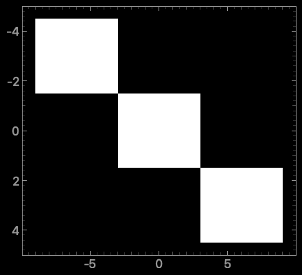

ImageItem#
Overview#
ImageItem displays images inside a
GraphicsView, or a ViewBox, which may itself be
part of a PlotItem. It is designed for rapid updates as needed for
a video display. The supplied data is optionally scaled (see
ImageItem.setLevels) and/or colored according
to a lookup table (see ImageItem.setColorMap
and ImageItem.setLookupTable).
Data is provided as a NumPy array with an ordering of either
col-major, where the shape of the array represents (width, height) or
row-major, where the shape of the array represents (height, width).
While col-major is the default, row-major ordering typically has the best
performance. In either ordering, a third dimension can be added to the array to hold
individual [R,G,B] or [R,G,B,A] channels/components.
Notes#
ImageItem is frequently used in conjunction with
ColorBarItem to provide a color map display and interactive level
adjustments, or with HistogramLUTItem or
HistogramLUTWidget for a full GUI to control the levels and lookup
table used to display the image.
An image can be placed into a plot area of a given extent directly through the
ImageItem.setRect method or the rect keyword.
This is internally realized through assigning a QTransform. For other
translation, scaling or rotations effects that persist for all later image data, the
user can also directly define and assign such a transform, as shown in the example
below.
Performance#
The performance of ImageItem can vary significantly based on
attributes of the image, levels and lut input arguments. It should not be
assumed that the default parameters are the most performant, as the default values are
largely there to preserve backwards compatibility.
The following guidance should be observed if performance is an important factor
Instantiate
ImageItemwithaxisOrder='row-major'Alternatively, set the global configuration optionally
pyqtgraph.setConfigOption('imageAxisOrder', 'row-major')
Use C-contiguous image data.
For 1 or 3 channel data, use uint8, uint16, float32, or float64 image dtype.
For 4-channel data, use uint8 or uint16 with
levels=None.levels should be set to either to
Noneor to single channel[min, max]Not setting levels will trigger autoLevels sampling
If using LUTs (lookup tables), ensure they have a dtype of uint8 and have 256 points or less. That can be accomplished with calling:
ImageItem.setLookupTablewithColorMap.getLookupTable(nPts=256)(default isnPts=512)
For floating point image arrays, prefer float32 dtype to float64 and avoid
NaNvalues.Enable Numba with
pyqtgraph.setConfigOption('useNumba', True)JIT compilation will only accelerate repeated image display.
Internally, pyqtgraph attempts to directly construct a QImage using a
combination of QImage.Format options and
QImage.setColorTable if necessary. This does not work in
all cases that pyqtgraph supports. If pyqtgraph is unable to construct the
QImage in such a fashion, it will fall back on
makeARGB() to manipulate the data in a manner that
QImage can read it in. There is a significant performance penalty when
having to use makeARGB().
For applications that are very performance sensitive, every effort should be made so
that the arguments passed to ImageItem.setImage
do not call makeARGB().
Examples#
Scale and Position ImageItem#
In the following example, it is demonstrated how a user scale and translate a
ImageItem within a ViewBox to occupy a specific
position and size.
import numpy as np
import pyqtgraph as pg
import pyqtgraph.exporters as exp
from pyqtgraph.Qt import QtGui, mkQApp
mkQApp("ImageItem transform example")
class MainWindow(pg.GraphicsLayoutWidget):
""" example application main window """
def __init__(self):
super().__init__()
self.resize(440,400)
self.show()
plot = self.addPlot()
# Set To Larger Font
leftAxis = plot.getAxis('left')
bottomAxis = plot.getAxis('bottom')
font = QtGui.QFont("Roboto", 18)
leftAxis.setTickFont(font)
bottomAxis.setTickFont(font)
# Example: Transformed display of ImageItem
tr = QtGui.QTransform() # prepare ImageItem transformation:
tr.scale(6.0, 3.0) # scale horizontal and vertical axes
tr.translate(-1.5, -1.5) # move 3x3 image to locate center at axis origin
img = pg.ImageItem(
image=np.eye(3),
levels=(0,1)
) # create example image
img.setTransform(tr) # assign transform
plot.addItem( img ) # add ImageItem to PlotItem
plot.showAxes(True) # frame it with a full set of axes
plot.invertY(True) # vertical axis counts top to bottom
self.timer = pg.QtCore.QTimer( singleShot=True )
self.timer.timeout.connect(self.export)
self.timer.start(100)
{kind=link}

Inheritance#
API#
- class pyqtgraph.ImageItem( )[source]#
Graphics object used to display image data.
ImageItem can render images with 1, 3 or 4 channels, use lookup tables to apply false colors to images, and users can either set levels limits, or rely on the auto-sampling.
Performance can vary wildly based on the attributes of the inputs provided, see performance for guidance if performance is an important factor.
There is optional numba and cupy support.
Bases:
pyqtgraph.GraphicsObject- Parameters:
image (
numpy.ndarrayorNone, defaultNone) – Image data.**kargs (
dict, optional) – Arguments directed to setImage and setOpts, refer to each method for documentation for possible arguments.
- Signals:
See also
- getHistogram(
- bins: str | int = 'auto',
- step: str | generic = 'auto',
- perChannel: bool = False,
- targetImageSize: int = 200,
- **kwargs,
Generate arrays containing the histogram values.
Similar to
numpy.histogram()- Parameters:
bins (
intorstr, default'auto') – The bins argument and any extra keyword arguments are passed tonumpy.histogram(). Ifbins == 'auto', a bin number is automatically chosen based on the image characteristics.step (
intorstr, default'auto') – The step argument causes pixels to be skipped when computing the histogram to save time. If step is ‘auto’, then a step is chosen such that the analyzed data has dimensions approximating targetImageSize for each axis.perChannel (
bool, defaultFalse) – IfTrue, then a histogram is computed for each channel, and the output is a list of the results.targetImageSize (
int, default200) – This parameter is used ifstep == 'auto', If so, the step size is calculated bystep = ceil(image.shape[0] / targetImageSize).**kwargs (
dict, optional) – Dictionary of arguments passed tonumpy.histogram().
- Returns:
Returns x and y arrays containing the histogram values for the current image. For an explanation of the return format, see
numpy.histogram(). Returns[(numpy.ndarray, numpy.ndarray),...]ifperChannel=True, one element per channel. Returns(None, None)is there is no image, or image size is 0.- Return type:
list[tuple[ndarray,ndarray]] |tuple[ndarray,ndarray] |tuple[None,None]- Warns:
RuntimeWarning – Emits when targetHistogramSize argument is passed in, which does nothing.
See also
numpy.histogramDescribes return format in greater detail.
numpy.histogram_bin_edgesDetails the different string values accepted as the bins parameter.
- getLevels() ndarray | None[source]#
Return the array representing the current level settings.
See
setLevels(). When autoLevels is active, the format is[blackLevel, whiteLevel].
- nanPolicy() str[source]#
Retrieve the string representing the current NaN policy.
See :meth:setNanPolicy.
- Returns:
The NaN policy that this ImageItem uses during downsampling.
- Return type:
- pixelSize() tuple[float, float][source]#
Get the x and y size of each pixel in the view coordinate system.
- quickMinMax(
- targetSize: int = 1000000,
Estimate the min and max values of the image data by sub-sampling.
Sampling is performed at regular strides chosen to evaluate a number of samples equal to or less than targetSize. Returns the estimated min and max values of the image data.
- save( ) None[source]#
Save this image to file.
Note that this saves the visible image, after scale/color changes, not the original data.
- Parameters:
fileName (
os.PathLike) – File path to save the image data to.*args (
tuple) – Arguments that are passed toQImage.save.
See also
QImage.save:*argsis relayed to this method.
- Return type:
- setAutoDownsample(
- active: bool = True,
Control automatic downsampling for this ImageItem.
- Parameters:
active (
bool, defaultTrue) – If active isTrue, the image is automatically downsampled to match the screen resolution. This improves performance for large images and reduces aliasing. If autoDownsample is not specified, then ImageItem will choose whether to downsample the image based on its size.Falsedisables automatic downsampling.
- setAutoLevels(
- bState: bool,
Controls whether automatic image scaling takes place for this ImageItem, if not otherwise overridden by
autoLevelsorlevelskeyword arguments in a call tosetImage().
- setBorder(
- b,
Define the color of the border drawn around the image.
- Parameters:
b (
color_like) – Accepts all arguments supported bymkPen().
- setColorMap( )[source]#
Set a color map for false color display of a monochrome image.
- Parameters:
colorMap (
ColorMapor str) – A string argument will be passed tocolormap.get().- Raises:
TypeError – Raised when colorMap is not of type str or
ColorMap.
- setCompositionMode(
- mode: CompositionMode,
Change the composition mode of the item, useful when overlaying multiple items.
- Parameters:
mode (
QPainter.CompositionMode) – Composition of the item, often used when overlaying items. Common options include:QPainter.CompositionMode.CompositionMode_SourceOver Image replaces the background if it is opaque. Otherwise, it uses the alpha channel to blend the image with the background, default.
QPainter.CompositionMode.CompositionMode_Overlay Image color is mixed with the background color to reflect the lightness or darkness of the background.
QPainter.CompositionMode.CompositionMode_Plus Both the alpha and color of the image and background pixels are added together.
QPainter.CompositionMode.CompositionMode_Plus The output is the image color multiplied by the background.
See
QPainter.CompositionModein the Qt documentation for more options and details.
See also
QPainter.CompositionMode:Details all the possible composition mode options accepted.
- setImage( )[source]#
Update the image displayed by this ImageItem.
All keywords supported by
setOpts()are also allowed here.- Parameters:
image (
numpy.ndarrayorNone, defaultNone) – Image data given as NumPy array with an integer or floating point dtype of any bit depth. A 2-dimensional array describes single-valued (monochromatic) data. A 3-dimensional array is used to give individual color components. The third dimension must be of length 3 (RGB) or 4 (RGBA).np.nanvalues are treated as transparent pixels.autoLevels (
boolorNone, defaultNone) – IfTrue, ImageItem will automatically select levels based on the maximum and minimum values encountered in the data. For performance reasons, this search sub-samples the images and may miss individual bright or dark points in the data set. IfFalse, the search will be omitted. IfNone, the value set bysetOpts()is used, unless alevelskeyword argument is given, which implies False.levelSamples (
int, default65536) – Only used whenautoLevels is None. When determining minimum and maximum values, ImageItem only inspects a subset of pixels no larger than this number. Setting this larger than the total number of pixels considers all values. See quickMinMax.**kwargs (
dict, optional) – Extra arguments that are passed to setOpts.
See also
quickMinMaxSee this method for how levelSamples value is utilized.
pyqtgraph.functions.makeARGB()See this function for how image data is modified prior to rendering.
Notes
For backward compatibility, image data is assumed to be in column-major order (column, row) by default. However, most data is stored in row-major order (row, column). It can either be transposed before assignment
imageitem.setImage(imagedata.T)
or the interpretation of the data can be changed locally through the axisOrder keyword or by changing the imageAxisOrder global configuration option.
- setLevels( )[source]#
Set image scaling levels.
Calling this method, even with
levels=Nonewill disable auto leveling which is equivalent tosetImage()withautoLevels=False.- Parameters:
levels (array_like or
None) – Sets the numerical values that correspond to the limits of the color range.[blackLevel, whiteLevel]sets black and white levels for monochrome data and can be used with a lookup table.
[[minR, maxR], [minG, maxG], [minB, maxB]]sets individual scaling for RGB values. Not compatible with lookup tables.
NoneDisables the application of levels, but setting to
Noneprevents the auto-levels mechanism from sampling the image. Not compatible with images that use floating point dtypes.
update (
bool, defaultTrue) – Update the image immediately to reflect the new levels.
See also
pyqtgraph.functions.makeARGBFor more details on how levels are applied.
- setLookupTable( )[source]#
Set lookup table lut to use for false color display of a monochrome image.
Ordinarily, this table is supplied by a
HistogramLUTItem,GradientEditorItemorColorBarItem.- Parameters:
lut (array_like or
Callable) – If lut is an np.ndarray, ensure the dtype is np.uint8. Alternatively can be a callable that accepts the current image as an argument and returns the lookup table to use. Support for callable will be removed in a future version of pyqtgraph.update (
bool, defaultTrue) – Update the intermediate image.
See also
pyqtgraph.functions.makeARGB()See this function for more information on how this is used.
ColorMap.getLookupTableCan construct a lookup table from a
ColorMapobject.
Notes
For performance reasons, if not passing a callable, every effort should be made to keep the number of entries to <= 256.
- setNanPolicy(
- nanPolicy: str,
Control how NaN values are handled during downsampling for this ImageItem.
- Parameters:
nanPolicy (
{'propagate', 'omit'}) – If ‘nanPolicy’ is ‘ignore’, NaNs are automatically ignored during downsampling, at the expense of performance. If ‘nanPolicy’ is ‘propagate’, NaNs are kept during downsampling. Unless a different policy was specified, a new ImageItem is created withnanPolicy='propagate'.
- setOpts(
- update: bool = True,
- **kwargs,
Set display and processing options for this ImageItem.
ImageItemandsetImage()support all keyword arguments listed here.- Parameters:
update (
bool, defaultTrue) – Controls if image immediately updates to reflect the new options.**kwargs (
dict, optional) – Extra arguments that are directed to the respective methods. Expected keys include:autoDownsample whose value is directed to
setAutoDownsample()nanPolicy whose value is directed to
setNanPolicy()axisOrder, which needs to be one of {‘row-major’, ‘col-major’}, determines the relationship between the numpy axis and visual axis of the data.
border, whose value is directed to
setBorder()colorMap, whose value is directed to
setColorMap()compositionMode, whose value is directed to
setCompositionMode()levels whose value is directed to
setLevels()lut, whose value is directed to
setLookupTable()opacify whose value is directed to
QGraphicsItem.setOpacityrect whose value is directed to
setRect()removable boolean, determines if the context menu is available
See also
setAutoDownsample()Accepts the value of
kwargs['autoDownsample'].setAutoLevels()Accepts the value of
kwargs['autoLevels'].setNanPolicy()Accepts the value of
kwargs['nanPolicy'].setBorder()Accepts the value of
kwargs['border'].setColorMap()Accepts the value of
kwargs['colorMap'].setCompositionMode()Accepts the value of
kwargs['compositionMode'].setImage()Accepts the value of
kwargs['image'].setLevels()Accepts the value of
kwargs['levels'].setLookupTable()Accepts the value of
kwargs['lut'].QGraphicsItem.setOpacityAccepts the value of
kwargs['opacity'].setRect()Accepts the value of
kwargs['rect'].
- setPxMode(
- b: bool,
Set whether item ignores transformations and draws directly to screen pixels.
- Parameters:
b (
bool) – IfTrue, the item will not inherit any scale or rotation transformations from its parent items, but its position will be transformed as usual.
See also
QGraphicsItem.GraphicsItemFlag:Read the description of ItemIgnoresTransformations for more information.
- setRect(
- *args,
Set view rectangle for the
ImageItemto occupy.In addition to accepting a
QRectF, you can pass the numerical values representing the x, y, w, h, where x, y represent the x, y coordinates of the top left corner, and w and h represent the width and height respectively.- Parameters:
*args (
tuple) – Contains one ofQRectF,QRect, or arguments that can be used to constructQRectF.
See also
QRectFSee constructor methods for allowable *args.
Notes
This method cannot be used before an image is assigned. See the examples for how to manually set transformations.